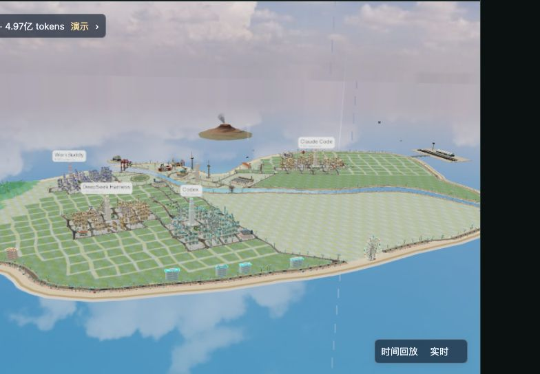
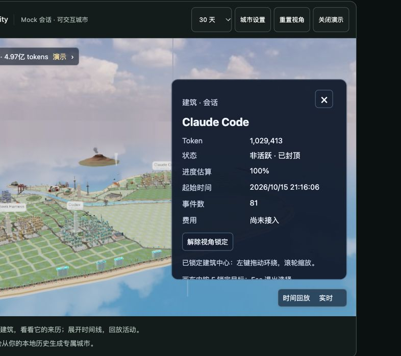

See where activity adds up.
Review token usage by source and time, then look into the sessions behind a busy day.
Illustration · sample data
A LITTLE WONDER IN YOUR AGENT HISTORY.
Turn your desktop agents’ history into a living city. Explore the sessions, replay the activity, and understand the usage behind it. Your work stays on your Mac.
Explore this demo city. Imagine your own history here.

Walk through a city made from mock sessions. Select a building or replay a day. Your own records stay untouched.
See how the city works →01 / EVERY BUILDING HAS A BACKSTORY
Every session leaves a trace. Oh Agent gives you a place to explore where it came from, how much it used, and when it happened.

Select a data building to see its source, recorded activity, and token usage.
Agent tools form districts. Token volume shapes building height. Decorative buildings are separate from your sessions.
Replay activity within the loaded time range and explore how the view changes over time.
Building height represents token scale, not productivity. Construction and growth are visual metaphors, not task completion. The app shows how much of your history is loaded.
02 / FOLLOW YOUR CURIOSITY
Follow your curiosity beyond the skyline. The Mac app offers usage, cost basis, and session evidence when you want a closer look.
Review token usage by source and time, then look into the sessions behind a busy day.
Keep subscription fees, usage-based estimates, and evidenced spend distinct. Unknown prices stay unknown.
Explore available traces and supported signals such as consecutive tool failures. Review the evidence in context.
Illustrative sequence. A retry is a clue to inspect, not proof of wasted work.03 / A PERSONAL WORLD
Your sessions hold your work, ideas, and context. Oh Agent analyzes supported records on your Mac. Session data is never uploaded for analysis.
Public price updates, release checks, and explicitly chosen official downloads may use the network. Those requests carry no session data.
BEFORE YOU STEP INSIDE
No. This website uses synthetic sample sessions. It never reads your local agent records. Your own city is generated by the installed macOS app using supported local records.
The desktop app targets macOS on Apple Silicon. Sources include Claude Code, Codex, DeepSeek Harness, and WorkBuddy; available statistics, traces, and cost evidence vary by source and version. Intel, Windows, and Linux desktop support is not currently claimed. Check the release notes before installing.
Data buildings represent loaded sessions. Their height reflects token volume, and sources form districts. Decorative buildings provide scenery. Building growth is a visual metaphor and does not measure task completion or output quality.
The current City view loads up to 500 recent sessions within the selected time range and reports its coverage. Available history depends on the records your agent tools retain. Missing records are not replaced with invented activity.
Use a supported agent first so it creates local records. In the desktop app, check source status, permissions, and synchronization. No records, denied access, and read failures require different follow-up steps; the website sample remains available to explore.
Usage-based amounts can be estimates, not charges. Subscription fees and evidenced spend are shown with their own basis; currencies are not directly added together. Comparing a subscription with an API-equivalent estimate does not prove money saved. City itself does not currently project cost data.
No API key or cloud account is required for local analysis. The app reads records your supported tools already leave on the Mac; macOS may require permission to read those locations.
The project code is MIT licensed. The configured public repository and release URLs are not currently accessible anonymously. Public download and source links will appear here after they are verified. This preview does not offer an available download.
A WORLD THAT STARTS WITH YOU
There’s a world in the work you’ve already done. Oh Agent helps you explore it, one session at a time.
Release and source links will be enabled after public access and installation details are verified. No download is available from this preview.
macOS · Apple Silicon target · Requires records from a supported agent. Final system requirements and installation notes will accompany the release.